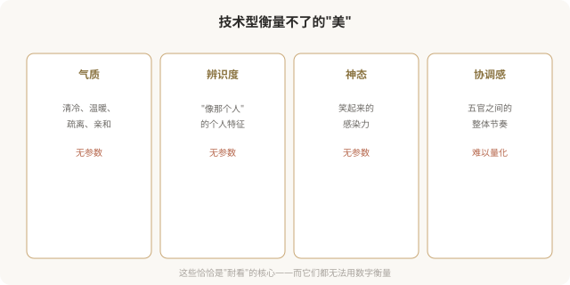
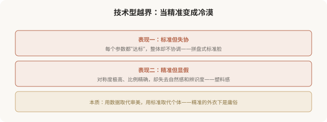

先说结论：技术型医美追求精准、对称、达标，但精准有明确的边界，气质、辨识度、协调感、神态这些美的核心维度，无法用数据衡量。当技术型越界，把“参数达标”当成“美不美”的唯一标准，它就滑向庸俗型：标准但失协、精准但显假、对称但冷漠。理解技术型的“能与不能”，是避免滑向庸俗的关键。这一篇作为技术型三篇的收尾，集中讲它的边界。
技术型的“能”

技术型的“不能”

这就是技术型的根本边界：它能测量比例、角度、对称度，但测不出气质、辨识度、神态、协调感。而这些“测不出”的维度，恰恰是决定一张脸耐不耐看的核心。
当技术型越界，精准的冷漠

一个反直觉的事实：绝对对称的脸反而显得不自然。研究发现，完全镜像对称的脸缺乏“生动感”，轻微的不对称反而是真实和美的来源。技术型追求“绝对对称”的极端，反而走到了美的反面。
如何把握技术型的边界
面诊时如何评估医生的技术型用法
理解技术型边界后，你可以通过沟通判断医生是否用对了工具：
- 好信号：医生用数据辅助说明，但强调“这是参考，关键看整体协调”。
- 好信号：医生指出你的“非标准”特征是辨识度，建议保留。
- 坏信号：医生把某个参数说成“必须达到”，无视你的整体。
- 坏信号：医生用 AI 评分或数据让你感觉“自己浑身是缺陷”。
- 坏信号：医生追求“绝对对称”“最佳值”，忽视自然感。
一个反思
技术型医美美学是现代医美的进步，它让设计更精准、决策更有依据。但技术的价值，在于辅助审美判断，而非取代它。当数据成为唯一裁判，当标准抹杀个体，技术型就滑向了它本应避免的庸俗，用精准的外衣，批量生产失协的脸。真正成熟的医美，是“高级的审美思路 + 技术的精准执行”：用数据辅助判断，但始终记得，美的核心，气质、协调、辨识度、生动，是数据永远测不出的部分。
本文用于健康教育与审美思辨，客观介绍技术型的能力与边界；具体医美决策须结合个体情况与具备资质的医师面诊。